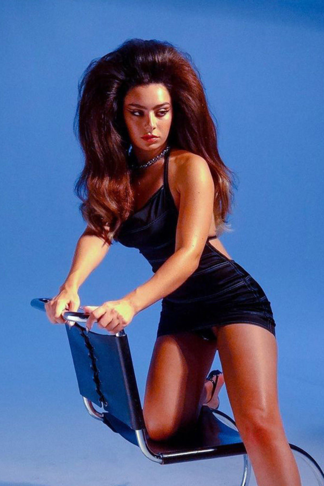
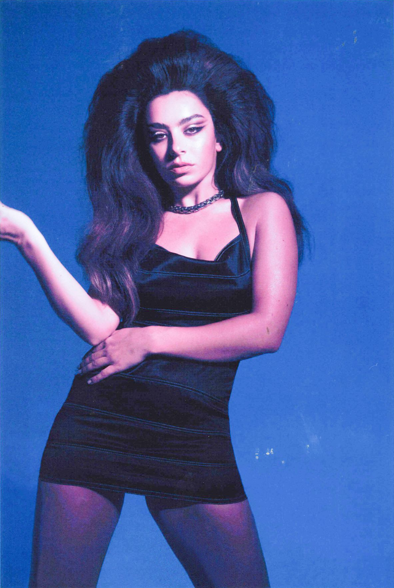

charli XCX är en brittisk artist, låtskrivare och producent som banat väg för framtidspop och hyperpop. Hon är känd för sitt unika sound, sin attityd och sina genreöverskridande album.

brat är Charli XCX:s efterlängtade album från 2024. Med en rå, elektronisk och rebellisk stil utforskar hon teman som självbild, kändisskap och attityd. Albumet blandar hyperpop med klubbmusik och innehåller låtar som snabbt blivit fanfavoriter.
brat summer är en era, inte en personlighet. Och den är över nu. Du kom hit försent.